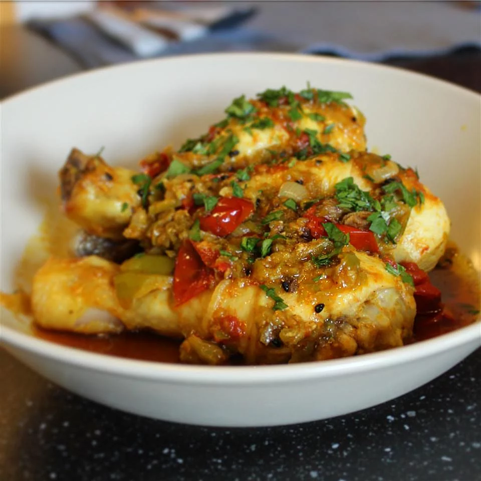

Indian-Style Chicken

Delicious Indian recipe that is simple, tasty, and full of flavor.
This was the first Indian meal I made, and it has stuck around since
all of my friends and family love it! Add more or less chiles depending
on your spice preference.
Ingredients
Directions
- Puree water, garlic, serrano chile peppers, and ginger together in a blender or food
processor until smooth.
- Heat ghee in a 6-quart saucepan over medium heat. Season chicken with salt and
pepper. Cook chicken in hot ghee until browned, 3 to 4 minutes per side. Transfer
chicken to a plate.
- Cook and stir garlic puree in the 6-quart saucepan until golden, 2 to 3 minutes. Add
onion; cook and stir until golden, 5 to 7 minutes. Add fenugreek, coriander, garam masala,
and turmeric to onion mixture; cook and stir until fragrant, about 1 minute.
- Stir tomatoes into onion mixture; cook and stir until tomatoes are lightly browned, 4
to 6 minutes. Add chicken, milk, and cream; bring to a boil. Reduce heat to medium, cover
saucepan, and cook until chicken is no longer pink in the center and tender, 15 to 20 minutes.
Transfer chicken to a serving platter using a slotted spoon. Continue cooking sauce until slightly
reduced, 5 to 7 more minutes. Stir cilantro into sauce and pour over chicken.
Prep: 20 mins
Cook: 40 mins
Total: 1 hr
Servings: 12
Yield: 4 servings
Nutrition Facts
Per Serving: 620 calories; protein 46.5g; carbohydrates 14.1g; fat 42.4g;
cholesterol 215.5mg; sodium 217.8mg.
More recipes